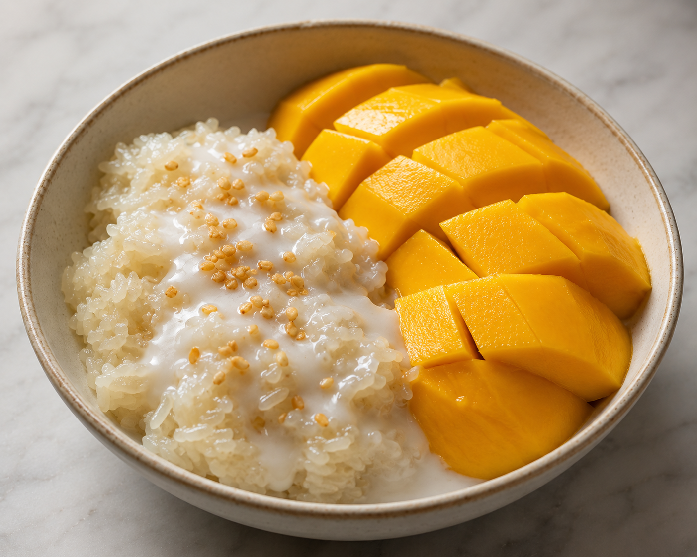

Mango Sticky Rice
Back to Homepage

Description
A sweet and creamy dessert made with sticky rice, fresh mango, and
coconut milk. This traditional Thai dish is perfect for satisfying your sweet tooth!
Ingredients
- 1 cup glutinous rice (sticky rice)
- 1 can full-fat coconut milk (400ml)
- 3 tablespoons sugar
- 1/2 teaspoon salt
- 1 teaspoon cornstarch
- 2 ripe mangoes, sliced
- Sesame seeds for garnish (optional)
Steps
- Rinse the glutinous rice in cold water until the water runs clear.
- Cook the rice in a pot with enough water to cover it by about an inch.
Bring to a boil, then reduce heat and simmer for about 20 minutes or until
the rice is tender.
- In a separate pan, heat the coconut milk and sugar over medium heat,
stirring constantly until the sugar dissolves.
- Add the cornstarch and salt to the coconut milk mixture.
- Once the rice is cooked, drain any excess water and transfer it to a large bowl.
- Gently fold the coconut milk mixture into the cooked rice until well combined.
- Serve the mango sticky rice warm or chilled, topped with sliced mangoes and sesame seeds.